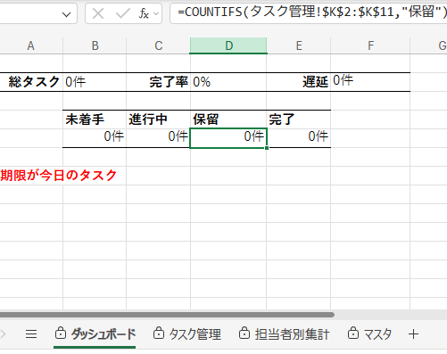

Excel・業務管理
業務管理システム
タスクの進捗状況を一元管理し、 業務全体の状況を把握しやすくすることを目的に制作した Excel管理システムです。
ダッシュボードから総タスク数、完了率、進行状況などを確認でき、 担当者別の集計も行える構成にしています。 必要な情報を一つの画面で確認しやすくすることを意識しました。
主な機能
タスク管理 ／ 進捗管理 ／ ダッシュボード ／ 担当者別集計
タスク管理 ／ 進捗管理 ／ ダッシュボード ／ 担当者別集計